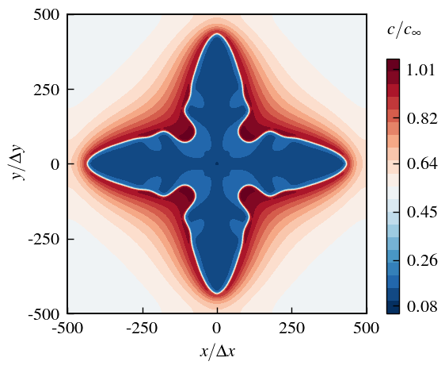
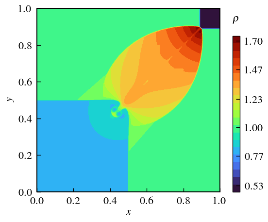
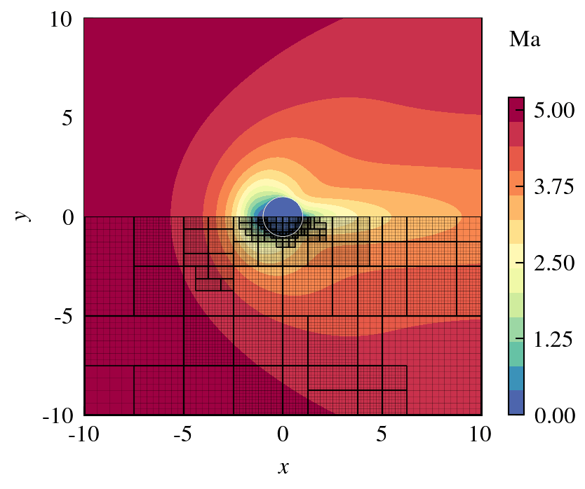

About Me
Computational researcher developing kinetic and diffuse-interface methods for multiscale transport, gas-solid interactions, and solidification. Expertise spans DUGKS/LBM, phase-field modeling, matched asymptotic and multiscale analysis, AMReX-based adaptive mesh refinement, and GPU-accelerated scientific computing.
Education
Ph.D. Candidate in Mechanical Engineering
2022 – present
Southeast University · Advisor: Prof. Dongke Sun
B. Eng. in Mechanical Engineering
2018 – 2022
Southeast University
Research Interests
Highlights






Publications
- Qin, C., Sun, D. A discrete kinetic scheme for modeling and simulation of alloy dendrite growth with solutal convection. International Communications in Heat and Mass Transfer, 178 (2026), 112019.
- Qin, C., Sun, D., Chen, W., et al. Discrete Kinetic Scheme Modeling of Anisotropic Crystal Growth in the Presence of Thermal Convection. Applied Mathematical Modelling, 152 (2025), 116574.
- Qin, C., Sun, D. A discrete kinetic scheme for simulating anisotropic liquid–solid phase change with thermal flows. Physics of Fluids, 37(4) (2025), 041704.
- Zhao, B. R., Sun, D. K., Wu, H., Qin, C., et al. Physics-informed neural networks for solving inverse problems in phase field models. Neural Networks, 190 (2025), 107665.
- Yuan, Z., Zhang, C., Qin, C., et al. Pre-wetting of sand for high speed oil-water separation. Journal of Water Process Engineering, 50 (2022), 103270.
- Wu, Y., Qin, C., Xing, H., et al. Lattice Boltzmann modeling of individual and collective cell dynamics in the presence of fluid flows. Physics of Fluids, 36(10) (2024), 101908.
Conferences
-
Qin, C., Sun, D. Discrete kinetic scheme modeling of dendrite growth with melt flow. OralThe 34th International Conference on Discrete Simulation of Fluid Dynamics, Harbin, China, July 3, 2025.
-
Qin, C., Sun, D. A discrete kinetic scheme for simulating anisotropic liquid–solid phase transition with thermal convection. PosterThe 1st International Symposium on Non-Equilibrium Transport Phenomena, Beijing, China, April 7, 2025.
-
Qin, C., Sun, D. A discrete kinetic scheme for simulation of dendrite growth with the impact of near-equilibrium flow. OralChinese Materials Conference 2024, Guangzhou, China, July 8, 2024.